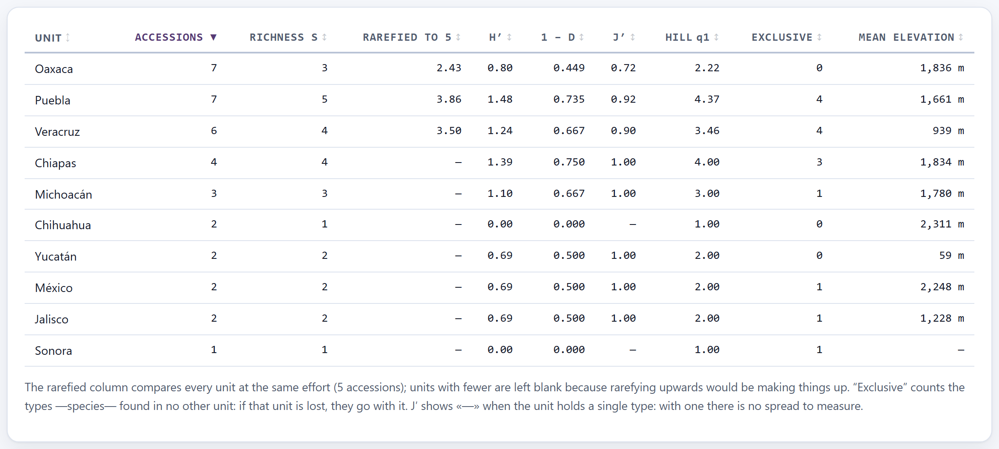
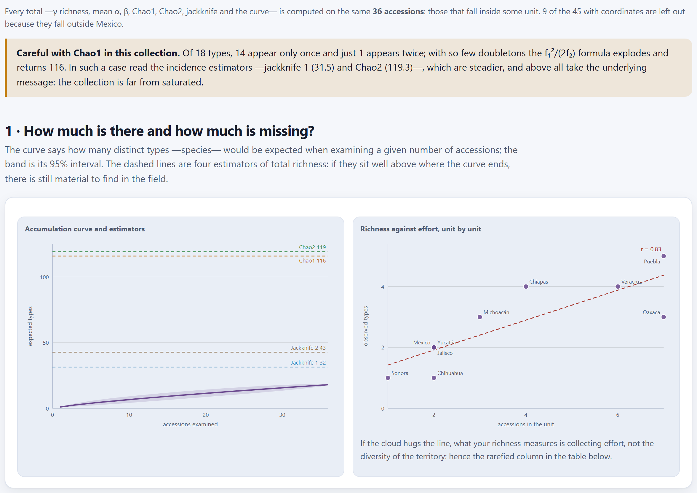
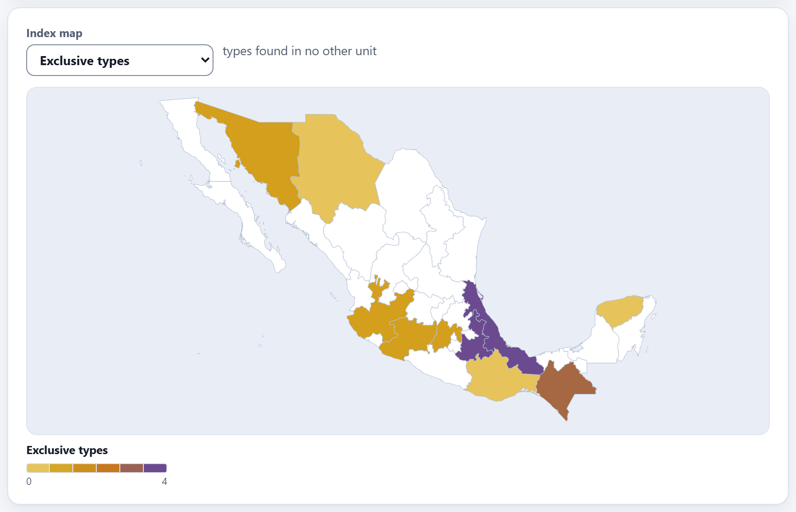
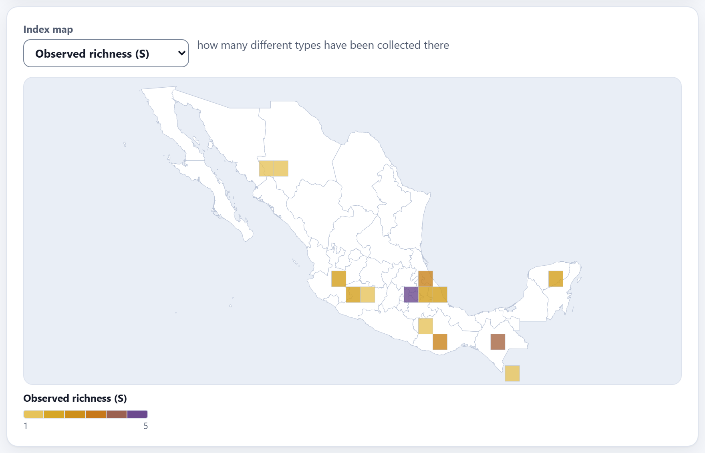

Geographic diversity
A collection is not worth how many envelopes it has, but how many distinct things it holds and where. Block 5 counts that diversity by region, by grid cell or by elevation belt; it compares it at equal effort, so that the state with the most field trips does not look the most diverse for that reason alone; it estimates how much is still left to collect; and it asks whether nearby regions hold the same things. Everything comes from the passport: there is nothing else to enter.
- 5.1Units, types and the block summary
- 5.2The diversity indices, unit by unit
- 5.3Rarefaction: comparing at the same effort
- 5.4How much is missing? Accumulation, estimators and coverage
- 5.5Exclusive types and the index map
- 5.6Do the regions resemble each other? Similarity and clustering
- 5.7The Mantel test and turnover between units
- 5.8The elevation gradient
- 5.9Exporting, and how everything changes with the unit
5.1Units, types and the block summary
Block 5 works on the passport accessions that have coordinates (Chapter 2): when you open it, or when you change any selector, it computes everything behind the animated wait Computing diversity and the Mantel test. With the example collection, 45 of the 46 accessions come in; the one without coordinates (MEX-ZM-0043) stays out of the whole block. If there are no accessions, the block says Load your accessions in Block 2 first.
![The header of Block 5: the title, the introductory paragraph, the selectors Geographic unit set to Mexican state, What counts as a type set to Species (genus + epithet), Elevation belt set to 500 m, Rarefy set to at the first quartile (recommended) and Compositional distance set to Jaccard, and six summary boxes: 36 accessions analyzed of 45 with coordinates in 10 units, 18 observed types, estimated richness Chao1 116.0 with 98.0 still to be collected, sample coverage 61.1 %, turnover between units 5.67 with gamma 18 and mean alpha 2.7, and effective diversity 10.3](../img/en/b5-controles.png)
Two decisions govern everything that follows: how the territory is divided (the unit) and what counts as distinct (the type). The other selectors fine-tune details.
| Selector | Options and what they do |
|---|---|
| Geographic unit | Mexican state: each point goes to the state whose outline contains it, and points outside Mexico form no unit. Country: the country where the point falls (if it falls in none, the one in ORIGCTY). Grid cell: squares of 0.25°, 0.5°, 1° or 2°. Elevation belt: elevation belts according to ELEVATION; accessions without elevation do not come in. |
| What counts as a type | Species (genus + epithet), Crop (CROPNAME), Genus or Accession name (ACCENAME). The species does not distinguish subspecies: teosinte counts as Zea mays. An empty value counts as the type “—”. |
| Cell size | 0.25°, 0.5°, 1° or 2°; only with the unit set to grid cells. The cells are the same ones the Block 4 map draws (Chapter 4). |
| Elevation belt | 100 m, 250 m, 500 m or 1000 m. It is used for the belt unit and, always, for the gradient section (Section 5.8). |
| Rarefy | The common effort at which richness is compared (Section 5.3): at the first quartile (recommended), at the median, at the smallest unit or at 5, 10 or 20 accessions. |
| Compositional distance | Jaccard, Sørensen or Bray-Curtis (Section 5.6). |
The six summary boxes summarize all the units taken together, not a single one. All the totals come from the same accessions: those that fall in some unit. With the unit set to states, the example collection distributes 36 of its 45 accessions with coordinates among 10 states. The other nine —the two maizes from Guatemala, the two potatoes, the oca, the barley, the amaranth from India, the cassava and the maize whose longitude lost its sign— enter no calculation, and a note at the start of section 1 says so: 9 of the 45 with coordinates are left out because they fall outside Mexico. With another unit the note gives another reason (belts, for example, leave out the accessions without a valid elevation).
| Box | Example | What it says |
|---|---|---|
| Accessions analyzed | 36 | Those that fall in some unit; below, out of how many with coordinates (45) and in how many units (10). |
| Observed types | 18 | The distinct types among the accessions analyzed, the γ richness: here, 18 species. |
| Estimated richness (Chao1) | 116.0 | How many types there would be in total according to Chao1, and how many would still be left to collect (98.0). With this collection, unreliable (Section 5.4). |
| Sample coverage | 61.1 % | The Good–Turing coverage (Section 5.4). |
| Turnover between units (β) | 5.67 | Whittaker’s beta; below, γ = 18 types and the mean richness per unit, α = 2.7 (Section 5.7). |
| Effective diversity | 10.3 | The Hill number of order 1 of the accessions analyzed (Section 5.2). |
Block 5 counts what is in the passport, errors included. In the uncorrected example collection, the maize Tuxpeño de la costa, with its unsigned longitude, does not fall in Veracruz (it falls in Myanmar, which appears as a “country” if you choose that unit) and stays out of the states; the tepary bean, at 25,000 m, stays out of the belts and the gradient, because the app only accepts elevations from −500 to 7,000 m; and the two duplicates count twice. Sort out Blocks 2 and 3 first (Chapters 2 and 3). The figures in this chapter are those of the freshly loaded collection, so that you can reproduce them; where cleaning changes something important, it is said.
5.2The diversity indices, unit by unit
Section 2 · Where is it? is a table with one row per unit and ten columns. A click on a header sorts by that column —from highest to lowest the first time, except for Unit, which goes in alphabetical order— and another click reverses the order; the arrow marks the active column, and cells with “—” always go last, in both directions. By default, the units run from the one with the most accessions to the one with the fewest (belts, from the lowest to the highest).
![The section 2 table with ten states: Oaxaca 7 accessions, richness 3, rarefied to 2 1.52, H 0.80, 1 minus D 0.449, J 0.72, Hill q1 2.22, 0 exclusive, 1,836 m; Puebla 7, 5, 1.86, 1.48, 0.735, 0.92, 4.37, 4, 1,661 m; Veracruz 6, 4, 1.80, 1.24, 0.667, 0.90, 3.46, 4, 939 m; Chiapas 4, 4, 2.00, 1.39, 0.750, 1.00, 4.00, 3; Michoacán, Chihuahua, Yucatán, México, Jalisco and Sonora; Chihuahua and Sonora, with a single type, show a dash for J′, and Sonora, with 1 accession, has no rarefied value or mean elevation](../img/en/b5-tabla.png)
| Column | What it is |
|---|---|
| Accessions | N: how many accessions fall in the unit. |
| Richness S | S: how many distinct types it holds. |
| Rarefied to 2 | The types that would be expected with the same number of accessions in every unit; the number in the header is that effort (Section 5.3). |
| H′, 1 − D, J′, Hill q1 | Shannon, Gini–Simpson, Pielou’s evenness and effective diversity (below); J′ shows “—” with a single type. Richness S is the Hill number q0; q2 has no column, but it equals 1 / (1 − (1 − D)). |
| Exclusive | The types found in no other unit (Section 5.5). |
| Mean elevation | The mean of ELEVATION over the unit’s accessions. Empty or impossible elevations (outside −500 to 7,000 m) do not count; if none is left, “—”. |
In a unit with N accessions spread over S types, let pi = Ni/N be the proportion of type i. The classic indices are:
Shannon (H′) grows with the number of types and with how even their distribution is; it uses the natural logarithm. Gini–Simpson (1 − D) is the probability that two accessions drawn at random, with replacement, are of different types. Pielou (J′) runs from 0 to 1 and measures evenness alone: 1 means that all types have the same number of accessions. With a single type, J′ = 0/0 is undefined: the app writes “—” (and leaves the cell empty in the CSV).
Shannon, Gini–Simpson and Pielou are on different scales and cannot be compared with one another. Hill numbers translate them to a single scale, that of effective types: how many equally abundant types would give the same diversity.
q0 counts all types equally; q1 weights them by their proportion; q2 gives even more weight to the abundant ones. Always q0 ≥ q1 ≥ q2, and the gap between them tells how dominated the unit is by a few types.
Oaxaca has 7 accessions: 5 of Zea mays, 1 of Phaseolus vulgaris and 1 of Capsicum annuum, so p = 5/7, 1/7, 1/7.
| H′ = −(5/7 · ln 5/7 + 2 · 1/7 · ln 1/7) = 0.24034 + 0.55597 = 0.7963 → the app writes 0.80 | |
| Σ p² = (25 + 1 + 1)/49 = 27/49 = 0.5510 | 1 − D = 22/49 = 0.449 |
| J′ = 0.7963 / ln 3 = 0.7963 / 1.0986 = 0.72 | q1 = e0.7963 = 2.22 |
| q0 = 3 · q2 = 49/27 = 1.81 → 3 types, but “worth” 2.2 even ones, or 1.8 if the abundant ones weigh more | |
How to read it for a decision: Oaxaca and Puebla have the same 7 accessions, but Puebla holds 5 species with J′ = 0.92 and Oaxaca 3 with J′ = 0.72: in Oaxaca, five of seven envelopes are maize. Oaxaca is well represented for maize and poorly for everything else. At the other extreme, Chiapas has 4 accessions and 4 species (J′ = 1, q1 = 4): every collection brought something new, a sign that the collection has not started repeating itself there and that more effort would keep yielding new types.
The same formulas, applied to the 36 accessions analyzed, give H′ = 2.336, 1 − D = 0.821, J′ = 0.808, q1 = 10.34 and q2 = 5.59. The Effective diversity box shows q1 = 10.3: there are 18 species, but the weight of maize (14 of the 36 accessions) makes them equivalent to about 10 equally represented species.
5.3Rarefaction: comparing at the same effort
Richness grows with the number of accessions examined: a state with thirty collections will almost always have more types than one with three, even if its territory is not more diverse. The app itself reminds you of this at the foot of the panel: Why rarefaction is not a whim. Hurlbert’s rarefaction (1971) answers how many types you would expect in each unit if you had taken the same number n of accessions from all of them.
If n of N accessions are taken without replacement, the probability of not seeing type i, which has Ni, is πi = C(N − Ni, n) / C(N, n), where C is the number of combinations. The expected richness is the sum of the probabilities of seeing it:
The variance is that of Heck, van Belle and Simberloff (1975); πij = C(N − Ni − Nj, n) / C(N, n) is the probability of seeing neither of the two. The app computes the combinations with the logarithm of the gamma function, so that they do not overflow with large collections. With n = N, rarefaction gives S with zero variance.
| C(7, 2) = 21 · πmaize = C(2, 2)/21 = 1/21 · πbean = πchili = C(6, 2)/21 = 15/21 | |
| E[S2] = (1 − 1/21) + 2 × (1 − 15/21) = 0.9524 + 0.5714 = 1.5238 → 1.52, as in the table | |
| Var = 0.4535 − 0.2041 = 0.2494 · standard deviation = 0.50 |
It can be checked by hand: with two envelopes there is only 1 type if both are maize, C(5, 2)/21 = 10/21; in the other 11 cases out of 21 there are 2 types. P(S = 2) = 0.5238, and the variance of such a variable is 0.5238 × 0.4762 = 0.2494.
The Rarefy selector chooses n. Units with fewer than n accessions are left with “—”, because, as the note under the table says, rarefying upwards would be making things up. The relative options never go below 2.
| Option | n | What remains |
|---|---|---|
| at the first quartile (recommended) | 2 | Nine states; only Sonora, with one accession, is left blank. It is a value that three out of four units reach. |
| at the median | 3 | Five: Chiapas and Michoacán 3.00, Puebla 2.60, Veracruz 2.45, Oaxaca 1.86. |
| at the smallest unit | 2 | The same as the quartile: the smallest has 1, and the app does not go below 2. |
| at 5 accessions | 5 | Three: Puebla 3.86, Veracruz 3.50, Oaxaca 2.43 (Figure 5.3). |
| at 10 or at 20 accessions | 10, 20 | None: the whole column shows “—”. |

The trade-off is clear: a small n lets you compare almost every unit, but discriminates little (with n = 2 the largest possible value is 2); a large one compares better, but fewer units. Look at two or three efforts and check whether the order of the units holds. In the example it does: at 2, 3 and 5 accessions, Oaxaca always stays below Puebla and Veracruz, even though it has as many accessions or more. That is the robust conclusion.
5.4How much is missing? Accumulation, estimators and coverage
Section 1 · How much is there and how much is missing? looks at all the units together. On the left is the accumulation curve: the rarefaction of the accessions analyzed for n = 1, 2…, 36, with a band of ±1.96 standard deviations (Heck’s variance from the previous section), and four dashed lines with the estimators of total richness. On the right, Richness against effort, unit by unit: each unit as a point (accessions against types), with its least-squares line and Pearson’s coefficient.

How to read the curve. If it flattens at the end, collecting more of the same hardly brings new types any more; if it ends still rising, as here, the collection is far from saturated. The example one goes from 17.22 expected types with 34 accessions to 18 with 36. The scatter on the right answers another question: with r = 0.83, the richness of each state is explained mostly by how many accessions it has, and that is why the table carries the rarefied column.
They all use the rare types, because those are the trace of what you have not seen yet (Chao, 1984, 1987; Burnham and Overton, 1978; Good, 1953). With abundances (accessions per type, over all units together), f1 is the number of types with a single accession (singletons) and f2 those with two (doubletons). With incidences (in how many units each type occurs, out of m units), Q1 and Q2 are the types present in one and in two units.
Chao2 = S + ((m − 1)/m) · Q1² / (2 Q2)
Jackknife 1 = S + Q1(m − 1)/m · Jackknife 2 = S + Q1(2m − 3)/m − Q2(m − 2)² / (m(m − 1))
Good–Turing coverage = 1 − f1 / N
| Abundances: N = 36, S = 18, f1 = 14 (14 species with one accession), f2 = 1 (Phaseolus vulgaris) | |
| Chao1 = 18 + 14² / (2 × 1) = 116 | coverage = 1 − 14/36 = 0.611 = 61.1% |
| Incidences in the m = 10 states: S = 18, Q1 = 15, Q2 = 1 (P. vulgaris, in Oaxaca and Michoacán) | |
| Chao2 = 18 + 0.9 × 225/2 = 119.25 | Jackknife 1 = 18 + 15 × 0.9 = 31.5 |
| Jackknife 2 = 18 + 15 × 17/10 − 1 × 64/90 = 18 + 25.5 − 0.71 = 42.79 | |
On the curve, the labels are rounded: Chao2 119, Chao1 116, Jackknife 2 43, Jackknife 1 32. Coverage is the probability that the next accession you collect belongs to a type you already have: here, 61%; with a probability of 39%, the next one would be a new species.
With a single doubleton, the Chao1 fraction explodes. When there are fewer than three doubletons, the app puts the warning Careful with Chao1 in this collection. at the top of the section, but the summary box still shows 116.0: do not quote it without the warning. Jackknife 1 is the most stable; Chao2, with a single type in two units, explodes just like Chao1.
The curve, the coverage and the four estimators come from the same 36 accessions, so they can be compared with one another; but they speak only of what was collected in Mexico. If you want them to cover the whole collection, change the unit to Country or to Grid cell: with those, all 45 accessions with coordinates and the 24 species come in (Section 5.9).
5.5Exclusive types and the index map
A type is exclusive to a unit when it appears in no other. The Exclusive column counts them, and their sum is the Q1 of the previous section. In the example collection there are 15, distributed as follows: Puebla 4 (Cucurbita pepo, Amaranthus hypochondriacus, Physalis philadelphica, Cucurbita argyrosperma), Veracruz 4 (Cucurbita moschata, Vanilla planifolia, Coffea arabica, Sechium edule), Chiapas 3 (Phaseolus coccineus, Theobroma cacao, Quercus crassifolia), and one each in Michoacán (avocado), the State of Mexico (wheat), Jalisco (agave) and Sonora (tepary bean). Oaxaca, with 7 accessions, has none.
For the genebank, an exclusive type is a risk and a priority at the same time: if the accessions of that unit are lost, the type disappears from the collection. They are good candidates for the safety duplicate and for recollecting in the same region; Block 6 (Chapter 6) also reviews the types with a single accession, which are not the same thing: a type can be exclusive to a unit with several accessions.
Below the table, with the unit set to states, countries or cells, comes the Index map: a choropleth map that colors each unit by the index you choose in its selector —Accessions, Observed richness (S) (the default), Rarefied richness, Shannon (H′), Gini-Simpson (1 − D), Evenness (J′), Effective types (Hill q=1) or Exclusive types—, with a sentence beside it that explains what it measures. Units without a value stay white; the ramp runs from the minimum to the maximum of the units, and both are written at its ends. The map uses the outlines and the projection of Block 4, explained in Chapter 4. With the unit set to elevation belts there is no map.


With cells, the label of each unit is the coordinate of its center. The 1° grid distributes the 45 accessions among 21 cells, nine of which have a single accession. It is the most honest unit when the states differ greatly in size, but the finer it is, the more cells with one or two accessions and the less you can rarefy.
5.6Do the regions resemble each other? Similarity and clustering
Section 3 · Do the regions resemble each other? compares the composition of the units: not how much they hold, but whether they hold the same things. Only units with at least two accessions come in, and at least three such units are needed; in the example, 9 states come in (Sonora stays out).
For two units A and B, with a and b types and c types in common, and with xk, yk the accessions of type k in each, the dissimilarities of Jaccard (1912), Sørensen (1948) and Bray and Curtis (1957) are:
All three run from 0 (identical composition) to 1 (nothing in common). Jaccard and Sørensen look only at presences; Sørensen gives double weight to what is shared and never exceeds Jaccard. Bray–Curtis also weighs how many accessions there are of each type.
Oaxaca: maize 5, bean 1, chili 1. Yucatán: maize 1, chili 1. They share c = 2 of a = 3 and b = 2 types.
| Jaccard = 1 − 2/3 = 0.333 | Sørensen = 1 − 4/5 = 0.200 |
| Bray-Curtis = (|5 − 1| + |1 − 0| + |1 − 1|) / (7 + 2) = 5/9 = 0.556 | |
With Jaccard it is the most similar pair of the nine states, and that is why it is the first pair the tree joins.
With the dissimilarity matrix, the app clusters the units by UPGMA (unweighted pair-group method with arithmetic means): it joins the closest pair, replaces the two by a group whose distance to each unit is the size-weighted mean of its members’ distances, and repeats until a single group remains. Each join is drawn at a height equal to half its distance; Oaxaca and Yucatán join at 0.167 (half of 0.333).
![Section 3: on the left, the heat map of nine states with the dendrogram above, in the order Veracruz, Jalisco, Puebla, Chiapas, Chihuahua, México, Michoacán, Oaxaca and Yucatán, with Veracruz in the palest shade off the diagonal and the shared composition legend from 0 to 100 %; on the right, the scatter of geographic distance against dissimilarity with a descending line, r = -0.42, and the note Mantel: r = -0.422, p = 0.123 with 999 permutations and 9 units. No evidence of geographic structure at this scale](../img/en/b5-composicion.png)
How to read it. In the heat map each cell is the similarity (1 − dissimilarity) between two units: the darker, the more they share, according to the 0, 50 and 100% legend; the diagonal is each unit against itself. Hover over a cell to see the pair and its percentage. In the example, Veracruz splits off from all the others at the maximum height, 0.5: its four species are exclusive, and it shares none with anyone. This is not an oddity of the territory but an effect of the data: its maize is the one that lost the sign of its longitude. With the Block 3 corrections applied, Veracruz recovers its maize (it ends up with 7 accessions and 5 species) and is no longer isolated. Chihuahua and México (0.25) and the Michoacán–Oaxaca–Yucatán group are the maize blocks with one companion.
Changing the distance changes the tree: with Sørensen the order is almost the same; with Bray–Curtis, which weighs abundance, Oaxaca and Yucatán go from 0.333 to 0.556, because the five maizes of Oaxaca carry weight, and the closest pairs are now states with two similar accessions (Chihuahua, México and Yucatán with one another, at 0.500).
5.7The Mantel test and turnover between units
Do nearby units hold the same things, and distant ones different things? The Mantel test asks this by comparing two matrices: the distances in kilometers between the units (haversine, Section 3.5) and the compositional dissimilarity. It is the right-hand chart of Figure 5.7: one point for each pair of units —36 with nine states— and the least-squares line as a visual aid.
In the Mantel test (1967), the statistic is Pearson’s correlation r between the elements of the two matrices below the diagonal. Since those elements are not independent (each unit enters many pairs), their significance is not taken from a table: the rows and columns of one of the matrices are permuted at random, 999 times, r is recomputed each time, and
The test is two-tailed. The permutations use a fixed seed, so the same analysis always gives the same p. A positive and significant r says that “what is close is alike”.
With the example collection, the note below the chart says Mantel: r = -0.422, p = 0.123 with 999 permutations and 9 units. No evidence of geographic structure at this scale. The negative sign —distant states would be slightly more alike— means nothing with p = 0.123 and nine units; what it does say is that composition is not ordered by geography but by what was collected on each trip. With p < 0.05 the sentence changes to There is geographic structure: what is close is alike.
The position of each state or country is the center of its bounding rectangle, and that of each cell, its center: with large states, the distance between centers is a rough approximation. With the unit set to elevation belts, the test does not use kilometers but the elevation difference between the centers of the belts, in meters, and the axis, the title and the note say so: with the example, Mantel (against elevation difference): r = 0.405, p = 0.176 with 999 permutations and 6 units. No evidence of elevational structure with these belts.
At least four units with two or more accessions are needed. If the test cannot be computed, the note gives the reason: that there are too few units with a composition to compare (by country, only 3 of the 8 have two or more accessions, and the app suggests using states, grid cells or elevation belts), or that all the dissimilarities are equal and there is no variation to correlate (by accession name, no state shares names with another).
Turnover between units
The Turnover between units (β) box holds Whittaker’s beta, the simplest measure of how much composition changes from one unit to another:
With the example, γ = 18, ᾱ = (3 + 5 + 4 + 4 + 3 + 1 + 2 + 2 + 2 + 1)/10 = 2.7 and β = 18/2.7 − 1 = 5.67. β = 0 would mean that every unit has all the types; a large β, that each unit holds a small and distinct part of the collection, as here. For the genebank, a high β means that no region substitutes for another: losing a state, or ceasing to collect there, leaves gaps that the others do not fill. Since γ and ᾱ come from the same units, β can be compared between analyses with the same unit; between different units, it cannot: more and smaller units always give a larger β (Table 5.5).
5.8The elevation gradient
Section 4 · The elevation gradient sorts into elevation belts the accessions with coordinates and a valid elevation (from −500 to 7,000 m), whatever unit is chosen (with the unit set to belts it does not appear, because the table already is that). It draws every belt from the lowest to the highest with data, the empty ones included. For each belt with accessions, two bars: accessions above, distinct types below, with both figures alongside; an empty belt carries 0 · 0 — no collections in this belt and a dotted line. The highest goes at the top. The belt width is that of the Elevation belt selector, and a footnote says how many accessions are included, how many belts are empty and how many accessions were left out for having no elevation or an impossible one.
![Section 4 with 500 m belts: 0-500 m 5 accessions and 4 species; 500-1,000 m 3 and 3; 1,000-1,500 m 7 and 5; 1,500-2,000 m 11 and 6; 2,000-2,500 m 15 and 9; 2,500-3,000 m 2 and 2; 3,000-3,500 m empty, with 0 · 0 and a dotted line; 3,500-4,000 m 1 and 1; the note 44 accessions with a valid elevation are included. 1 empty belt within the collected range. 1 accession has an impossible elevation and is left out (accepted range −500 to 7,000 m; fix it in the accession record, in Block 2); below, the buttons Table as CSV, Curve as SVG and Heat map as SVG](../img/en/b5-gradiente.png)
In the example, more than half the collection lies between 1,500 and 2,500 m (26 of the 44 included, with 6 and 9 species), the elevation of the central valleys where the maizes are concentrated. In the 2,000 to 2,500 m belt, 15 accessions give only 9 species; in the 0 to 500 m belt, 5 give 4. The lowlands are under-collected, but the little there is is varied: that is where a field trip would pay off most.
The empty belts are the most useful reading of the chart: from 3,000 to 3,500 m there is no collection at all, between the bitter potato at 3,797 m and everything else, so that elevation is not represented. And an impossible elevation does not vanish silently: the note counts it and says where to fix it: 1 accession has an impossible elevation and is left out (accepted range −500 to 7,000 m; fix it in the accession record, in Block 2) (Chapter 2).
5.9Exporting, and how everything changes with the unit
At the end of the panel there are three buttons (Figure 5.8):
- Table as CSV saves geographic-diversity.csv, in UTF-8, with one row per unit and the columns
unit,key(the code of the state, of the country, of the cell or the lower limit of the belt),accessions,richness,rarefied,shannon,gini_simpson,pielou(empty with a single type),hill_q1,exclusive,mean_elevation,latandlon(the position used by the Mantel test; empty for belts). The indices carry three decimals, not rounded to two as on screen. - Curve as SVG saves accumulation-curve.svg, the curve with its estimators.
- Heat map as SVG saves composition-similarity.svg, the heat map with its dendrogram.
The SVG files carry the light theme colors, so that they look the same in a document. As in the other blocks, the figures can also be opened in the figure studio (Section I.6). The CSV does not store the settings: write down which unit, type and effort you used.
The same collection, other units
All the results depend on the unit and the type. With the example collection:
| Unit · type | Units · accessions | γ | β | Mantel and what is worth noting |
|---|---|---|---|---|
| State · species | 10 · 36 | 18 | 5.67 | r = −0.422, p = 0.123, 9 units. The figures of this chapter. |
| Country · species | 8 · 45 | 24 | 6.38 | Mexico holds 36; only 3 of the 8 countries have two or more: a heat map, but no Mantel test. Myanmar comes from the unsigned longitude. |
| 1° cell · species | 21 · 45 | 24 | 12.62 | r = −0.408, p = 0.055, 12 cells. Chao1 = 224, Chao2 = 234, jackknife 1 = 44.0. |
| 0.5° cell · species | 26 · 45 | 24 | 15.00 | r = −0.399, p = 0.077, 12 cells; 14 of the 26 cells have a single accession. |
| 500 m belt · species | 7 · 44 | 23 | 4.37 | Against elevation difference: r = 0.405, p = 0.176, 6 belts. No index map; the 25,000 m tepary is left out. |
| State · genus | 10 · 36 | 14 | 4.38 | Chao1 drops to 50: there are more genera with two or more accessions. |
| State · crop | 10 · 36 | 18 | 5.67 | Oaxaca rises to 4 types: the crop separates what the species lumps together. |
| State · accession name | 10 · 36 | 35 | 9.00 | Almost every accession is a type: no state shares names, so Mantel has no variation to correlate. |
The species is the natural type for the interspecific diversity of a multi-crop genebank; in a single-crop genebank, the accession name (the landrace or the race) is what matters, provided it is written consistently (Section 3.3). The state serves to report to those who manage the territory; the cell, to compare fairly and plan trips; the belt, to see which environments are missing.
When something goes wrong
| What you see | Why it happens and what to do |
|---|---|
| Load your accessions in Block 2 first. | There is no passport data. Load your collection or the example one (Chapter 2). |
| Accessions analyzed is smaller than the accessions with coordinates | Some fall in no unit (outside Mexico, or with no valid elevation for belts); the note in section 1 says how many and why. |
| The rarefied column is full of “—” | The effort is larger than the accessions of almost every unit. Choose at the first quartile (recommended) or a larger unit. |
| Careful with Chao1 in this collection. appears | There are fewer than three types with two accessions. Read jackknife 1 and the curve, not Chao1. |
| at least three units with two accessions each are needed | There is nothing to compare composition with. Use a larger unit (2° cells, 1,000 m belts). |
| The Mantel note says it cannot be computed | Read the reason: too few units with two or more accessions (use larger units) or all dissimilarities equal (change the type). |
| The gradient note says an accession has an impossible elevation | A mistyped elevation (outside −500 to 7,000 m). It is left out of the belts, the gradient and the mean elevation; correct it in its Block 2 record. |
| The Index map is not shown | The unit is the elevation belt, which has no geography. |
| If you are going to measure diversity | then first correct coordinates, elevations and duplicates (Blocks 2 and 3): each error changes the units, the tree and the estimators. |
| If you want to know which unit is best represented | then compare the rarefied column, at two or three efforts, and not the raw richness; keep the order that holds. |
| If a unit has S equal to N, or J′ = 1 with few accessions | then sampling is lacking there: each collection brought something new. It is a candidate for the next field trip (Block 6). |
| If a unit has many accessions and a low q1 | then it is saturated: collect other species there. |
| If the accumulation curve does not flatten or the coverage is low | then it is far from saturated; report jackknife 1 as a floor for what is missing, and Chao1 only without the warning. |
| If a unit has exclusive types | then secure their safety duplicate and consider recollecting there. |
| If the Mantel test gives p < 0.05 with a positive r | then diversity has geographic structure: spread your collecting over the territory instead of concentrating it. |
| If a belt is missing from the gradient | then that elevation is not represented: note it as a gap for Block 6. |
Block 5 does not change the passport: it only measures it. What turns out poor or absent here is what Block 6 turns into priority cells and a collecting route.